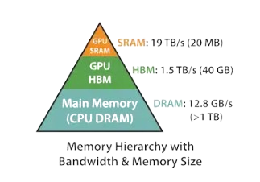

This is the final part of a three-part series where we understand the smallest moving pieces of the Flash Attention paper and then put them together into the full algorithm.
Before continuing, I recommend reading the blog on Mastering Softmax and Tiled Matrix Multiplication. It is very important to understand those before moving onto this final post.
In this post we will look at what makes Flash Attention fast and implement it in CUDA C++.
Transformers
Large language models (LLMs) generally use transformer-based architectures, and attention forms the heart of any transformer.
Given query, key, and value matrices $Q, K, V \in \mathbb{R}^{N \times d}$, standard self-attention is computed as:
(Remember N is the sequence length and D is head dimension)
$S \in \mathbb{R}^{N \times N}$ is the raw attention score matrix. After applying softmax row-wise we get normalized attention weights $P$. Finally, $O \in \mathbb{R}^{N \times d}$ is the output.
The most computationally intensive operations are computing $S$ and $O$. Both involve large matrix multiplications, and they must be performed sequentially. The memory complexity is $O(N^2)$, for a sequence length of $N = 4096$, the score matrix $S$ alone requires storing $4096^2 \approx 16.7$ million floating-point values. At FP16 (2 bytes each), that is over 33 MB just for one intermediate matrix.
What is Flash Attention doing?
What is the simplest idea you can think of for making attention faster?
Sparse attention? lower precision? yes! they are great ideas but they produce only an approximation of the final result. Flash Attention instead produces the exact same numerical result as standard attention while being significantly faster and more memory-efficient.
To understand this, we need to cover few more concepts.
Memory hierarchy in a GPU
Modern GPUs have several tiers of memory, each with very different size and speed characteristics:

- Registers - registers are the memory with the fastest possible access (~1 cycle) and private to each thread. the caveat being extremely limited in size.
- SRAM (shared memory) - this is an on-chip memory shared by all threads within the same block. it takes (~5 - 30 cycles) to access an element from here.
- HBM (High Bandwidth Memory) - also called global or device memory. This is off-chip (physically separate from the GPU die) but packaged on the same board. It is the largest memory tier (40-80 GB on A100) but the slowest, with access latency of ~600-800 cycles. All threads across all blocks can access it.
There are more memory layers but this is a good start.
What is the general takeaway from this? HBM is incredibly slow and we want to minimise how often we read from and write to it.
Compute bound vs memory bound
An operation is compute-bound when the GPU spends most of its time doing arithmetic. Data can be supplied faster than the arithmetic units can consume it, so the bottleneck is the compute units themselves.
An operation is memory-bound when the GPU spends most of its time moving data. The arithmetic units sit idle, waiting for values to arrive - the bottleneck is bandwidth, not compute.
So which category does standard attention fall into? Let's do some roofline analysis.
The roofline analysis
Let's understand this with an example for an A100 GPU.
- Peak FP16 throughput: ~312 TFLOPS
- HBM bandwidth: ~1,555 GB/s
The roofline ridge point (arithmetic intensity threshold) is:
If an operation performs more than 201 floating-point operations per byte of memory transferred, it is compute-bound. If fewer, it is memory-bound.
Arithmetic intensity of standard attention
For a matrix multiplication of shape $(N \times d) \cdot (d \times N)$
For calculating memory for $QK^\top$, we need to read $Q$ and $K$ (each of shape $N \times d$, stored in FP16 = 2 bytes each) and write the result $S$ (shape $N \times N$):
Combining FLOPs and memory, the arithmetic intensity for $QK^\top$ is:
Here is a summary across common values of $N$ and $d$ on an A100:
| N | d | FLOPs | Memory (bytes) | Intensity (FLOP/byte) | Bound |
|---|---|---|---|---|---|
| 256 | 64 | 8.39M | 196.6K | 43 | memory |
| 2048 | 64 | 536.87M | 8.91M | 60 | memory |
| 4096 | 64 | 2.15G | 34.60M | 62 | memory |
| 256 | 128 | 16.78M | 262.1K | 64 | memory |
| 2048 | 128 | 1.07G | 9.44M | 114 | memory |
| 4096 | 128 | 4.29G | 35.65M | 120 | memory |
| 256 | 256 | 33.55M | 393.2K | 85 | memory |
| 2048 | 256 | 2.15G | 10.49M | 205 | compute |
| 4096 | 256 | 8.59G | 37.75M | 228 | compute |
Standard attention is actually memory-bound for most practical sequence lengths.
The GPU is spending most of its time moving the matrix back and forth between HBM and the compute units, not actually doing useful arithmetic.
This is the problem Flash Attention solves. By tiling the computation into blocks that fit in SRAM and using the online softmax trick to avoid materialising the full $S$ matrix in HBM, Flash Attention dramatically reduces HBM reads and writes, turning a memory-bound operation into one that is bounded only by compute.
CUDA Implementation
Now let's walk through an actual CUDA implementation of Flash Attention 1. The full kernel is about 90 lines and we'll break it into logical stages.
1. Kernel signature and launch configuration
The kernel is launched with a 2-D grid where each block handles one (batch, head) pair, and each thread within the block owns exactly one query row.
__global__ void fa1(float* __restrict__ d_query, float* __restrict__ d_key,
float* __restrict__ d_value, float* __restrict__ d_output,
const int batch_size, const int n_head,
const int seq_len, const int head_embd,
const float scale, const int tile)
{
int b = blockIdx.x; // batch index
int h = blockIdx.y; // head index
int t = threadIdx.x; // each thread owns one query row
...
}
From main(), the launch looks like this:
dim3 block(S); // S threads per block - one per query row
dim3 grid(B, H); // B x H blocks - one per (batch, head) pair
size_t sram = 2 * TILE * D * sizeof(float); // shared mem for K and V tiles
fa1<<<grid, block, sram>>>(dQ, dK, dV, dO, B, H, S, D, scale, TILE);
With B = 8, H = 12, S = 128 the grid has 96 blocks each of 128 threads - every thread
independently computes one complete output row of the attention matrix.
2. Pointer arithmetic and SRAM layout
All four tensors are stored flat in HBM as [B, H, S, D]. To locate the slice
belonging to this block's (b, h) we compute a single offset:
int head_size = seq_len * head_embd;
int head_offset = (b * n_head + h) * head_size;
float* q_ptr = d_query + head_offset;
float* k_ptr = d_key + head_offset;
float* v_ptr = d_value + head_offset;
float* o_ptr = d_output + head_offset;The shared memory is allocated for two tiles - one tile for K and one for V:
extern __shared__ float sram[];
float* k_tile = sram; // first half: tile x head_embd floats
float* v_tile = sram + tile * head_embd; // second half: tile x head_embd floats
At TILE = 64, D = 64 this costs 2 x 64 x 64 x 4 = 32 KB of shared
memory per block.
3. Loading the query row into registers
Each thread reads its own query row once from HBM into a private register array. This avoids fetching $Q$ from the slow HBM each iteration.
float q_reg[64];
for (int d = 0; d < head_embd; d++)
q_reg[d] = q_ptr[t * head_embd + d];4. Online softmax state
Three accumulators are initialised before the tile loop. These carry the running state of the online softmax - the trick that lets us compute a numerically-stable softmax incrementally without ever storing the full $N \times N$ score matrix.
float o_reg[64] = {}; // running weighted sum of V rows
float m_i = -1e9f; // running maximum score seen so far
float l_i = 0.0f; // running normalisation denominator5. The tile loop for loading K and V
We walk through the sequence dimension of K and V in chunks of size tile. All
threads cooperate to load each chunk into SRAM with coalesced memory accesses.
for (int tile_idx = 0; tile_idx < seq_len; tile_idx += tile) {
int tile_elems = tile * head_embd;
// Coalesced load of K tile: thread t loads elements t, t+blockDim, t+2*blockDim ...
for (int i = t; i < tile_elems; i += blockDim.x) {
int row = i / head_embd, col = i % head_embd;
k_tile[i] = k_ptr[(tile_idx + row) * head_embd + col];
}
for (int i = t; i < tile_elems; i += blockDim.x) {
int row = i / head_embd, col = i % head_embd;
v_tile[i] = v_ptr[(tile_idx + row) * head_embd + col];
}
__syncthreads(); // ensure all threads see the filled tile before compute
...
The strided loop i = t; i += blockDim.x assigns consecutive floats to
consecutive threads, giving perfectly coalesced 128-byte HBM transactions. For
tile=64, D=64 there are 4096 floats to load; with 128 threads each thread
fetches exactly 32 floats.
6. Computing attention scores for the tile
With K in SRAM and Q in registers, each thread computes the dot products for its query row against every key in the current tile.
float s[64];
float m_tile = -1e9f;
for (int j = 0; j < tile; j++) {
float dot = 0.0f;
for (int d = 0; d < head_embd; d++)
dot += q_reg[d] * k_tile[j * head_embd + d];
s[j] = dot * scale;
if (s[j] > m_tile) m_tile = s[j]; // track tile-local max
}
scale is $1/\sqrt{d}$, passed in from the host. m_tile is the
maximum score within this tile alone. This is needed to update the global running maximum in the
next step.
7. Online softmax update
This is the mathematical heart of Flash Attention. When a new tile arrives with a larger maximum score, the previously accumulated output must be re-scaled to remain correct. The update equations are:
In code:
float m_new = fmaxf(m_i, m_tile);
float sc_old = expf(m_i - m_new); // α: rescale factor for old state
float l_new = l_i * sc_old;
for (int d = 0; d < head_embd; d++)
o_reg[d] *= sc_old; // rescale old output accumulator
for (int j = 0; j < tile; j++) {
float p = expf(s[j] - m_new); // softmax numerator for token j
l_new += p;
for (int d = 0; d < head_embd; d++)
o_reg[d] += p * v_tile[j * head_embd + d]; // accumulate V contribution
}
m_i = m_new;
l_i = l_new;
__syncthreads(); // safe to overwrite tile buffers on next iterationNotice that neither the full score matrix $S$ nor the full softmax matrix $P$ is ever written to HBM. Everything lives in registers and SRAM for the entire duration of the sequence loop. This is what eliminates the $O(N^2)$ memory footprint.
8. Final normalisation and write-back
After all tiles have been processed, o_reg holds the unnormalised weighted
sum and l_i holds the softmax denominator. A single division produces the
final output, which is written to HBM exactly once per element.
for (int d = 0; d < head_embd; d++)
o_ptr[t * head_embd + d] = o_reg[d] / l_i;Standard attention writes $S$ and $P$ to HBM as intermediate results and then reads them back. Flash Attention writes only $O$ - a single pass over the output. For large $N$ this difference in HBM traffic dominates runtime.
Putting it all together
Here is how the three ideas - memory hierarchy, tiling, and online softmax - combine in the kernel:
| What | Where it lives | Why |
|---|---|---|
Query row q_reg |
Registers | Read once from HBM; reused across all tile iterations |
| K tile, V tile | SRAM (shared memory) | Loaded once per tile from HBM; all threads share the same block |
Score array s[], softmax state m_i, l_i, o_reg |
Registers | Never materialised in HBM - eliminates $O(N^2)$ writes |
Output o_ptr |
HBM | Written exactly once after the full sequence is processed |
The result is an attention kernel whose HBM traffic scales as $O(N \cdot d)$ rather than $O(N^2)$, while producing bit-identical output to the standard algorithm. That is the essence of Flash Attention 1.